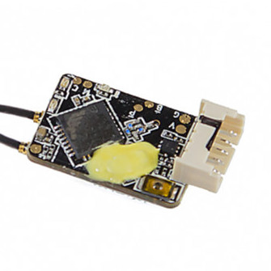
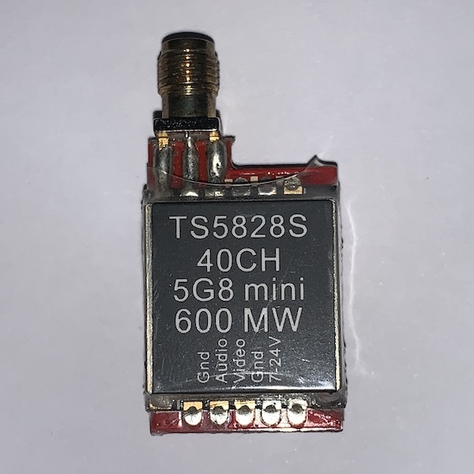

Frame: il frame è il telaio del drone. Di solito è in carbonio per avere una buona resistenza e un basso peso.
Sul mercato si possono trovare frame a prezzi diversi: si va dai €15 ai €70! Le differenze tra un frame di fascia alta e uno di fascia bassa sono la resistenza agli urti e la propagazione delle vibrazioni attraverso il carbonio.
Il mio consiglio è di non comprare telai di fascia bassa perché possono essere pessimi. |
Flight controller: il flight controller è la "mente" del drone. Esso permette di controllare il drone ricevendo i segnali del radiocomando.
Sulla scheda del flight controller sono presenti numerosi sensori come barometro, giroscopio e accelerometro, oltre a molti pin con cui si può interfacciare con altre periferiche.
Tutti i flight controller sono identificati da una F seguita da un numero. Ad oggi esistono schede F1, F3, F4 ed F7.
Le schede F1 sono ormai cadute in disuso. Le schede F3 stanno diventando vecchie. Oggi si usano principalmente schede F4 ed F7, le più potenti. |
ESC: gli ESC (Electronic Speed Controller) regolano la velocità dei motori in base alle istruzioni ricevute dal flight controller.
Le caratteristiche principali degli ESC sono la corrente massima e la tensione massima. Un ESC infatti va scelto in base alle proprie esigenze e alla corrente massima che possono consumare i motori.
Un'altra caratteristica è il protocollo di comunicazione tra ESC e flight controller: può essere principalmente PWM o DShot (300, 600 o 1200).
Gli ESC si dividono inoltre in:
singoli, cioè una scheda che riesce a controllare un motore per volta
4 in 1, cioè una scheda che integra 4 ESC e che quindi riesce a controllare 4 motori alla volta. |
Motori (brushless): i motori forniscono spinta e controllano il drone attraverso la rotazione delle eliche. La dimensione di un motore è espressa da quattro numeri (es. 2207).
I primi due indicano il diametro dello statore, mentre gli ultimi due indicano l'altezza dello statore stesso.
Quando si scelgono i motori bisogna prestare attenzione alla dimensione, alla corrente consumata ed al numero di giri al minuto. Quest'ultima grandezza è espressa da un numero seguito da KV, cioè giri al minuto per volt.
Per batterie 4S si usano motori da 2300-2600 KV, mentre per batterie 6S si usano motori da 1700-1850 KV. |
Batteria: la batteria è di tipo LiPo (Polimeri di Litio). Essa fornisce corrente al drone e permette di far girare i motori. Il connettore è solitamente un XT60, mentre quello che permette una carica corretta (chiamato bilanciatore) è di tipo JST-XH.
Le caratteristiche delle batterie sono tre:
il numero di celle (S): il numero di celle determina la tensione della batteria. Una tensione maggiore indica una potenza maggiore, ma bisgna scegliere ESC e motori che supportano quella tensione. Per calcolare la tensione si moltiplica il numero di celle per 3,7V.
Di conseguenza abbiamo: 1S=3,7V - 2S=7,4V - 3S=11,1V e così via.
la capacità (mAh): la capacità indica la carica disponibile della batteria quando è caricata alla sua tensione massima (4,2V/cella). Essa influenza il tempo di volo e le dimensioni della batteria, quindi anche il suo peso. Quando si sceglie una batteria bisogna avere una capacità sufficiente per consentire un buon tempo di volo, ma non troppo alta, altrimenti si rischia di aggiungere troppo peso al drone e di influenzare le sue caratteristiche di volo.
il tasso di scarica (C): il tasso di scarica indica quanta corrente si può scaricare dalla batteria senza danneggiare la stessa. Una batteria va scelta anche in base alla corrente consumata dai motori. Per calcolare la corrente massima di scarica della batteria si deve moltiplicare il valore di C per la capacità della batteria (espressa in Ah).
|
|  Ricevente: la ricevente ha il compito di ricevere i segnali del radiocomando e di passarli al Flight Controller. Una ricevente va scelta in base al proprio radiocomando ed al tipo di protocollo.
È fondamentale comprare una ricevente compatibile con il proprio radiocomando.
Il protocollo indica il metodo di trasmissione dei segnali dalla ricevente al FC. Non bisogna comprare una ricvente con uscita solo PWM perchè non sarebbe compatibile con il Flight Controller. I protocolli più usati sono: PPM, SBUS, UART (seriale). Questi tre sono compatibili con la maggior parte dei flight controller.
|
Fotocamera: la fotocamera serve per trasmettere il video del drone al visore, insieme alla trasmittente video. Una fotocamera FPV ha solitamente un'uscita analogica NTSC e/o PAL.
Quando si sceglie una fotocamera bisogna considerare alcune caratteristiche:
- il tipo di sensore (CMOS/CCD): i sensori CCD hanno un costo maggiore rispetto ai CMOS ma offrono alcuni vantaggi, tra cui:
- Prestazioni migliori in condizioni di illuminazione difficili (es. alto contrasto, tramonto)
- Assenza dell'effetto gelatina
- Latenza minore
- la risoluzione della fotocamera (TVL): il numero di TVL indica quante linee diverse è possibile visualizzare sull'immagine. Una fotocamera con numero di TVL più alto ha una risoluzione maggiore, ma anche una latenza maggiore. Di solito si usano fotocamere da 600/800 TVL.
- il campo visivo (FOV): il campo visivo indica l'angolo di visione della fotocamera, cioè quanto è ampia l'immagine. Esso è determinato dalla lunghezza focale dell'obiettivo.
- lo standard video (NTSC/PAL): lo standard video indica il "protocollo" dell'immagine. Le fotocamere più recenti hanno un'uscita sia NTSC che PAL.
|
Trasmittente video (VTX): la trasmittente video invia il segnale proveniente dalla fotocamera al visore.
Le caratteristiche delle VTX sono le seguenti:
la potenza: la potenza indica la potenza irradiata tramite l'antenna. Di solito è tra 25mW e 800mW. Una potenza maggiore indica maggiore portata e un segnale più pulito a distanze elevate o con degli ostacoli tra il visore ed il drone. Una potenza maggiore però causa rumore sui canali vicini e quindi potrebbe risultare difficile volare con gli amici.
lo standard video (NTSC/PAL): le VTX più recenti supportano sia NTSC sia PAL.
qualità del segnale: le VTX più economiche possono avere il difetto di non essere precise nella trasmissione. Questo comporta un segnale video di bassa qualità.
Smart Audio/Tramp: uno di questi due protocolli permette di cambiare le impostazioni della trasmittente video direttamente dal flight controller o dal radiocomando.
Attenzione: non accendere mai una VTX senza l'antenna collegata perché rischi di bruciarla!
|